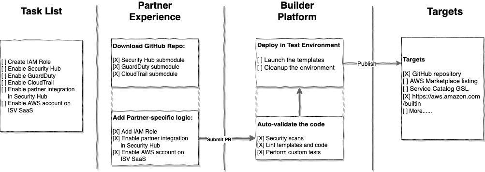
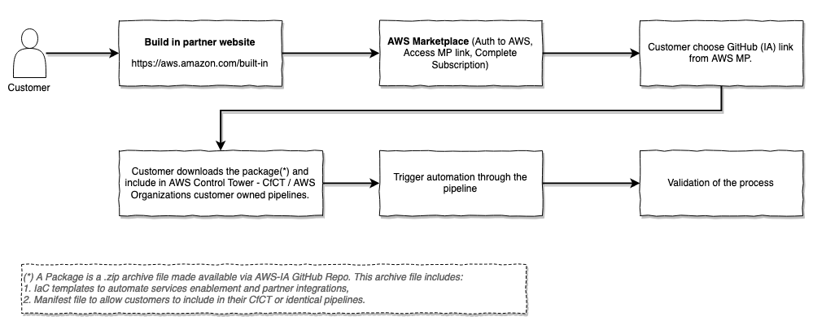
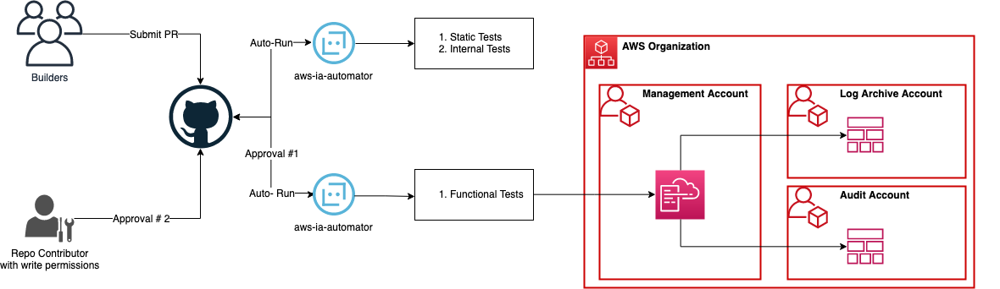

Overview
The AWS Built-in program is a differentiation program that validates Partner solutions which have automated their solution integrations with relevant AWS foundational services like identity, management, security and operations. This program helps customers find and deploy a validated Partner solution that addresses specific customer use cases while providing deep visibility and control of AWS native service integration.
Utilizing AWS Built-In Partner software, customers can trust that the ISV product they are evaluating has been independently verified by AWS.
The program is focused across the four foundational service domains [Security, Identity, Management & Operations]. Partners who have existing IaC assets to deploy their solution and are part of the Security and CloudOps competency will be considered for a pilot to validate the value added by the ABI program.
For example, when a customer subscribes to an ISV partner product, they need to follow a series of steps in order to transition from the subscription phase to a fully functional one. These steps include a combination of manual and IaC steps. Enabling services like Amazon GuardDuty, AWS Security Hub, Amazon Inspector, and AWS CloudTrail before performing additional steps like adding AWS accounts, integrating with CloudTrail events and more on partner SaaS product.
With ABI packages, the partner leverages the AWS provided templates to enable AWS Services and add their additional logic on top of it. The customer can use these packages to reach full functionality in hours instead of days or weeks.
Partner Workflow
AWS provides modules to enable AWS foundational services based on AWS Security Reference Architecture (AWS SRA) guidelines.
Partners can pick these modules and add additional logic to perform remaining steps like enabling partner integration in Security Hub or registering AWS account to partner product.
Once the solution is built, the partner can submit a Git Pull Request (PR) to the repository created for this project.
All the PRs will go through a set of auto validations built-in to the pipelines. On successful completion of validation, the code is merged to the main branch of the repository, and published to other pre-defined targets.

Customer workflow [Subjected to change]

Terminologies
- ABI : AWS Built In (ABI) as explained above.
- ABI Modules : The GitHub repositories based of AWS SRA, which provide templates for enabling AWS foundational services like CloudTrail, GuardDuty, SecurityHub and more security services.
- ABI Projects : The GitHub repositories built by Partners in partnership with AWS. While building these projects, partners leverage ABI Modules provided to enable AWS services as needed before creating partner specific assets. The project contains 1\ IaC templates to automate enablement of both AWS and Partner services, 2\ Wrappers for most common formats like CfCT manifest, SC Baselines and more to allow customers to easily pick and choose from the services available. For Pilot, we will focus only on including CfCT manifest file in the package.
- Project : This is a GitHub repository for both ABI modules and ABI Projects
- Project Owner : The aliases of the 2‑5 Amazonians that will be granted administrative privileges to your AWS Builder Platform project.
- Project Contributor : Contributors are those that have been granted access to the project’s code repository and can submit a Git Pull Request(PR). All non-AWS contributors will have read-only access to the repository. AWS contributors will have read/write access to the repository.
Architecture

When you submit a PR, there are set of automatic tests and manual validations that are performed. Following are the series of events that happen after PR.
- Static tests are executed. The static tests include lint checkers, scan the templates and code provided against a set of pre- and custom-defined security rules to identify potential vulnerabilities. Tools used to run static tests are listed in How to build an ABI project section.
- Functional tests on sucessful completion of static tests. You can comment
/do-e2e-tests in the PR to kickoff the functional tests. The functional tests, deploys the tempaltes in the multi-account AWS environment associated with this repository. Tools used to run functional tests are listed in How to build an ABI project section.
- Bot Approval is provided on successful completion of both static and functional tests.
- Human Approval by one of the AWS personal who have write permissions to the repository after sucessful PR review.
- Merge: PR is merged to the main branch after clearing all 4 steps above.
- Publish: the code is then automatically published to the targets.
Sample project layout
.
├── CODEOWNERS
├── CODE_OF_CONDUCT.md
├── LICENSE
├── NOTICE.txt
├── README.md
├── VERSION
├── docs
├── images
├── lambda_functions
│ └── source
│ └── enable_integrations
├── scripts
│ ├── cleanup_config.json
│ ├── cleanup_config.py
├── submodules ## ABI Modules
│ └── cfn-abi-aws-securityhub
│ ├── README.md
│ ├── lambda_functions
│ ├── scripts
│ └── templates
└── templates ## Partner build templates
├── abi-enable-partner1-securityhub-integration.yaml
└── enable_integrations
└── partner1-enable-integrations.yaml
How to get a GitHub repository
Work with with your AWS PSA contact to request for a repository. Once the project is approved, an ABI standard repository is created and invitation is shared with you.
You need to Accept the invitation to get access to the repository.
How to build an ABI project
CLICK HERE for steps.
ABI deployment modes
Things to know
- For Pilot, the existing modules are expected to operate only in AWS Control Tower environments. Hence, the modules provided as part of ABI should be deployed only in the Home Region of AWS Control Tower.
- Follow the instructions in this link to enable trusted access for AWS CloudFormation StackSets with AWS Organizations via AWS CloudFormation StackSets console.
- Granting write permissions to GitHub repository is disabled by ABP when you add external contributors. This is required by AWS Security.
- For Pilot, the GitHub repositories remain private and GitHub IDs will be added manually.
Cleanup Instructions
CLICK HERE for additional instructions.
Cost Considerations
CLICK HERE for steps.
FAQs
CLICK HERE for additional information.
FAQs
How to add internal AWS contributors?
Access to the repositories are controlled from the builder platform interface. Refer to ABP usage guide for steps.
How to add contributors from partner side?
Use the same mechanism mentioned above to manage access to the repository. If you are a partner trying to access these repos, reach out your assigned AWS PSA.
How do I add secrets to the parameters in the taskcat file?
Our preferred way is to pass the parameter as SSM_Parameter value and pass it as $[taskcat_ssm_/path/to/ssm/parameter] as a value. While testing locally, make sure to create the parameter in your account/region that you are testing. When you check-in the code, reach out to your AWS contact to facilate this setup in your test environment.
A: Please make sure you have docker running in your local environment before executing ash tool. There were issues reported with podman, please use docker while we investigate the issue.